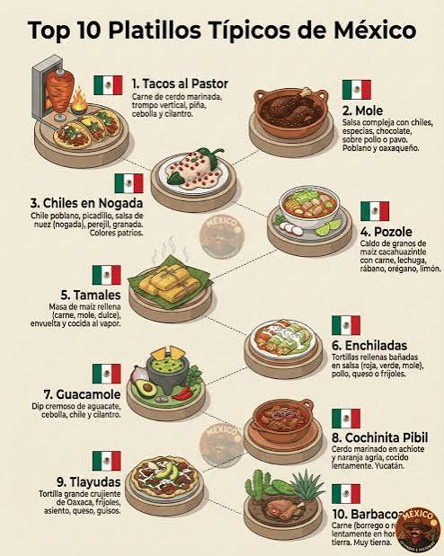

1. Platillos Tipicos
La gastronomia mexicana es Patrimonio de la Humanidad. Sus platillos mas representativos son:
- Mole poblano con pollo
- Pozole rojo y blanco
- Chiles en nogada
- Tacos al pastor
- Tamales de mole y rajas
- Cochinita pibil
- Pan de muerto y calaveritas

Inicio - Siguiente